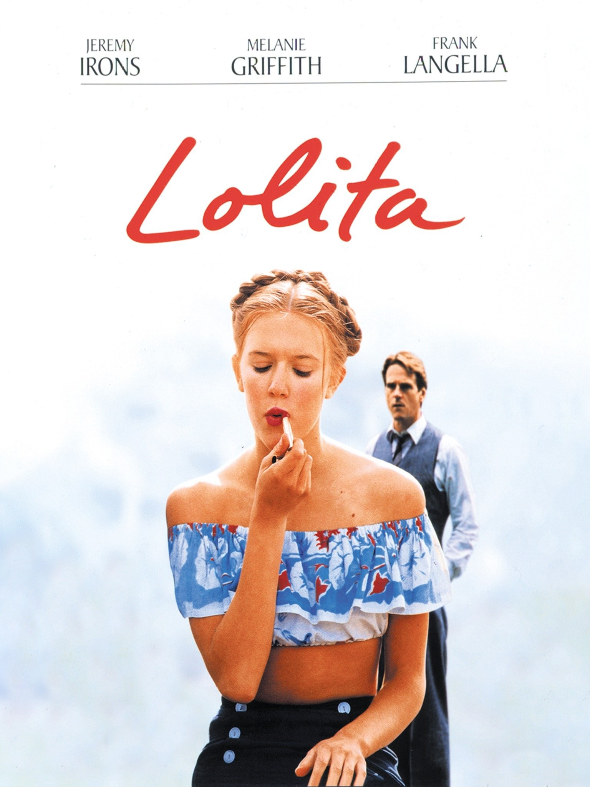
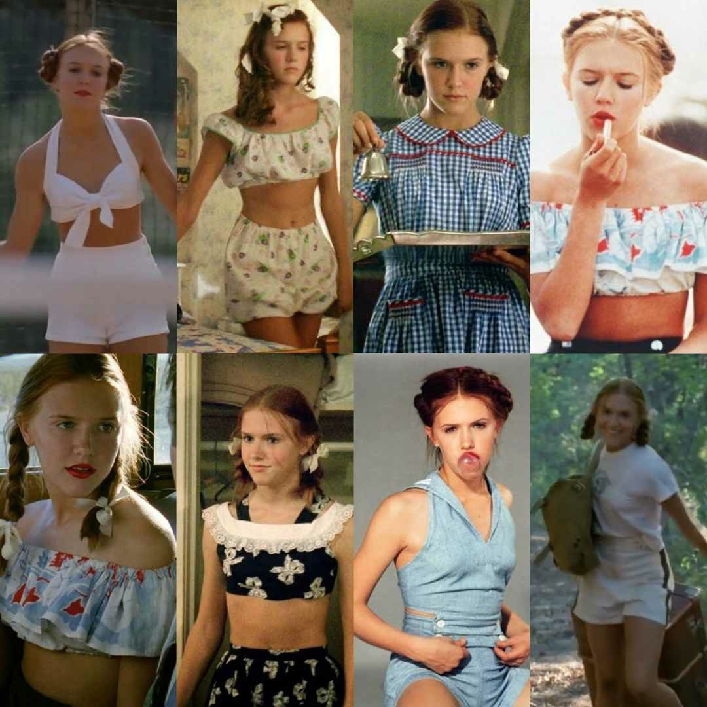

สำหรับแฟชั่น Coquette เป็นแฟชั่นที่มี Inspiration มาจากภาพยนต์เรื่อง Lolita หนังยุค 90s ที่แฟชั่นการแต่งตัวของนางเอกในเรื่องมีความโดดเด่นและเป็นเอกลักษณ์มากๆ
โดยแบ่ง ออกเป็น 3 part หลัก
Dollette coquette
Americana coquette
Farm girl coquette
2 part ย่อย
Winter Fairy coquette
Dark Nymphet coquette
